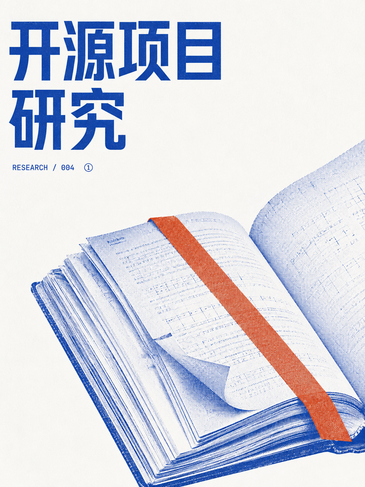
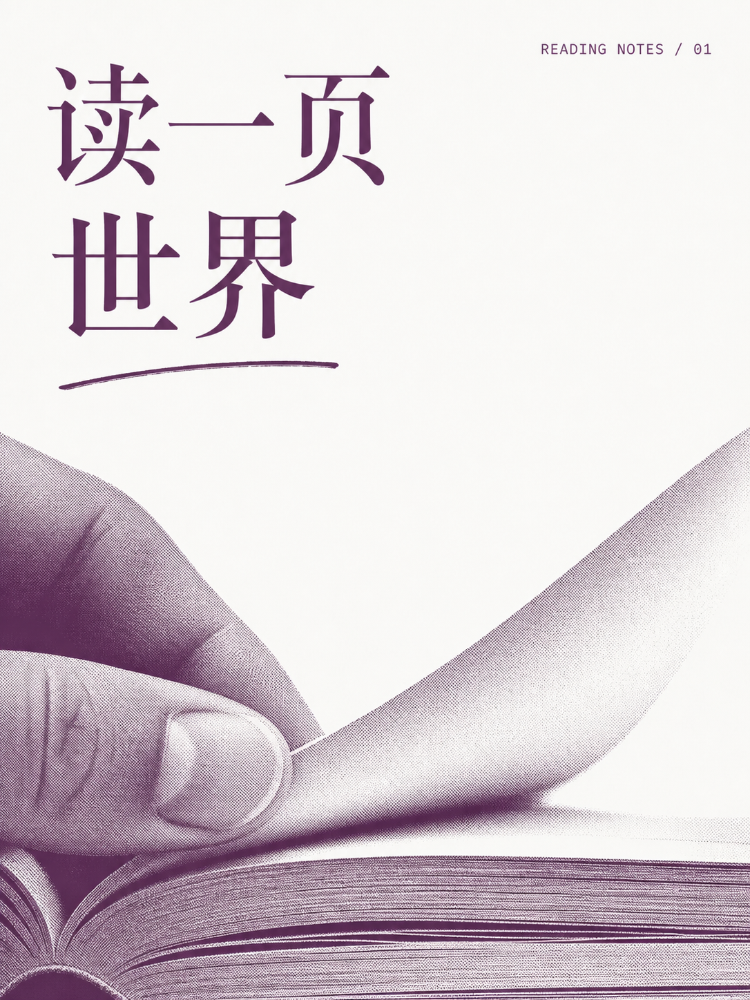
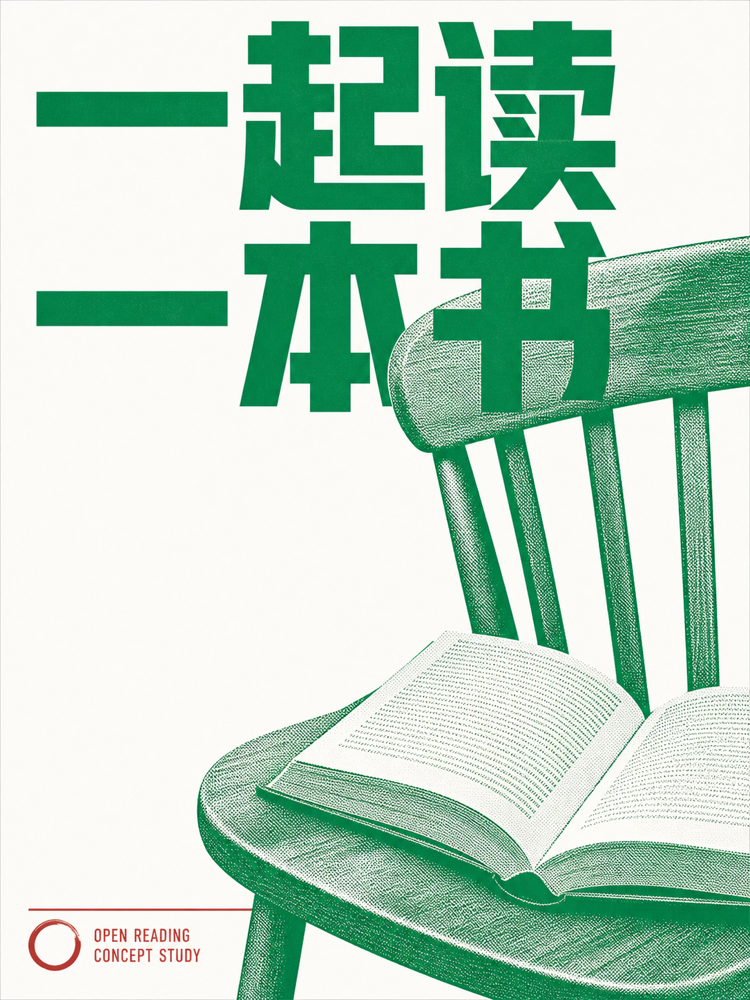

Skill 组织审美规则，Agent 编写配方与提示词，图像模型执行生成。
明确主体、用途与准确文字
图片 + 实际提示词 + 设计配方

钴蓝 + 陶土橙粗体标题 · 书本裁切

茄紫单墨文学字形 · 翻页网点

植物绿 + 酒红主体与辅助信息分工
本项目原创能力总览 · 三图为按上游 Skill 规则实际生成的样本，未经后期叠字或改色 · 上游版本 c8ff705 · 2026-09-05